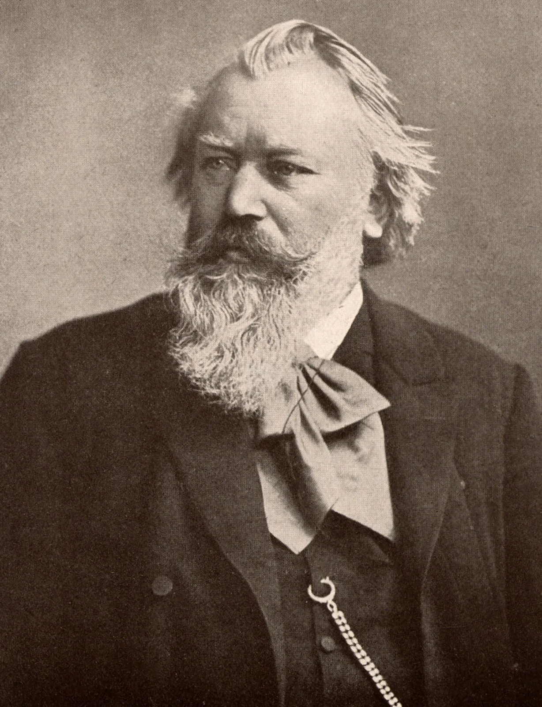

Over ons
Tijdens het brainstormen over onze website kwamen wij, Ruben en Elisa, op dit idee. Sommige mensen kennen enorm veel over de muziek: Claire de lune, Für Elise en nog veel meer, maar hoe zit het nou met degene die dit hebben bedacht? Ook wij wisten deze vraag niet zomaar te beantwoorden. Nu staan we toch hier, klaar om al deze informatie te delen met het internet, maar genoeg gepraat over de componisten, hier is een kort stukje over wie wíȷ́ zijn.
 Johannes Brahms
1833(Duitsland)-1897(Oostenrijk)
Bach
Geboorte-Dood
Beethoven
Geboorte-Dood